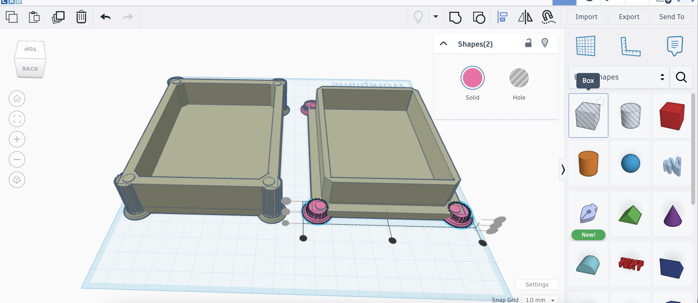

TinkerCAD
First print and first flop of the semester
For my first time 3D printing at Brandeis, I started off with an introduction to using the Prusa MINI and the Prusa Slicer software. My first print project was of a custom name tag keychain. After opening the .3mf file into Prusa Slicer, I could edit the text on the keychain directly in the program and then begin to configure the slicer settings (CAM) as listed in the image below:
 Sketch
Sketch
For my first time 3D printing at Brandeis, I started off with an introduction to using the Prusa MINI and the Prusa Slicer software. My first print project was of a custom name tag keychain. After opening the .3mf file into Prusa Slicer, I could edit the text on the keychain directly in the program and then begin to configure the slicer settings (CAM) as listed in the image below:
Resizing the columns and fitting them in the corners of the container Placement of columns along the four corners of the top part of the container Removing the top portion of columns using the "hole" feature on TinkerCAD  Aligning bases of the columns to the bottom of the container Adding text to side of the container
Adding text to side of the container
 Finished Design
Finished Design
 Base of container
Top of Container
Green regions are supports for design of top part of the container
Base of container
Top of Container
Green regions are supports for design of top part of the container
 Printing! (top left and bottom right)
Printing! (top left and bottom right)
The first setting sets the diameter of the filament that is extruded onto the printer base. I learned in class how this thickness setting can be adjusted based on the project you’re printing and the structural integrity you’re aiming to achieve. For example, a smaller diameter can be good for getting fine details in a print, but will take longer. On the other hand, selecting a larger diameter will result in faster printing time and can be beneficial for increased plastic bonding or ”stickiness” and stronger structural integrity.
This did the trick and my nametag was looking good after the first color layer finished. Once the printer stopped, I was able to unload my yellow filament and switch it for blue filament. However, I didn’t allow all the yellow filament to be extruded before starting the printer back up again so there was a bit of clumpage near the nozzle, causing parts of the lettering and border of the nametag to be skipped. Professor Ben noticed the issue too and told me to try stopping the print and starting again to get a cleaner print.
Second time around printing the nametag, I was able to get a little bit of a cleaner transition between the two colored filaments–making sure the first filament was fully extruded to the point where the second color was coming out of the nozzle–before resuming printing. I still had a little bit of “skipping” in the lettering of the print but hopefully with some more practice, I’ll get some higher quality prints without issues from clumped filament.
Sketch 1st attempt (bottom), 2nd attempt (top)
1st attempt (bottom), 2nd attempt (top)
 1st attempt (bottom), 2nd attempt (top)
1st attempt (bottom), 2nd attempt (top)
 1st attempt (bottom), 2nd attempt (top)
1st attempt (bottom), 2nd attempt (top)
Overall, this was a great crash course in 3D printing and it was fun to make mistakes and learn from them and my fellow classmates along the way.
Fusion
Less painful for me than the 3D printer
For the second part of this project, I found some designs on Thangs to see what features and geometries could be (un)successfully 3D printed. Similar to the first part of this project, I opened print files in Prusa Slicer with the same slicing settings as the nametag print.
I also had time to do a second torture test, this time with a geometric calibration dome I found on Printables. This design had cool geometries like a hollow dome, a ~30° curved overhang, a straight overhang of 3.7cm without any supports, more overhangs, and lots of fine details. I would say the printer was pretty successful in printing this job as well. There was some filament that was loosely hanging around a 90° overhang region and the long overhang was not completely straight, but it held up surprisingly well. The rest of the print looked pretty similar to the design in Prusa Slicer.